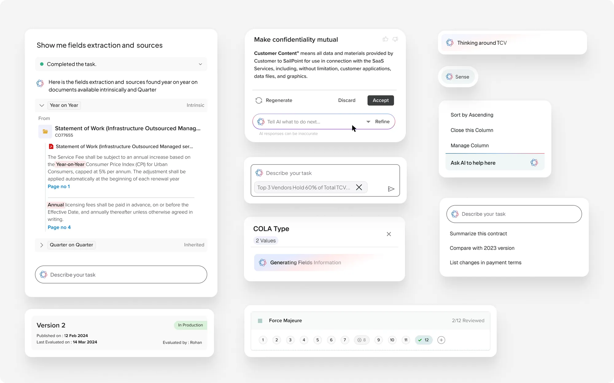
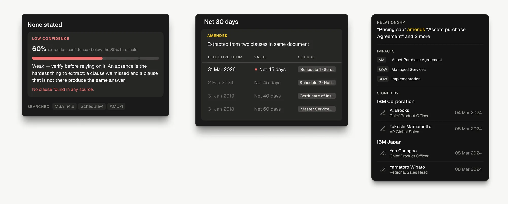
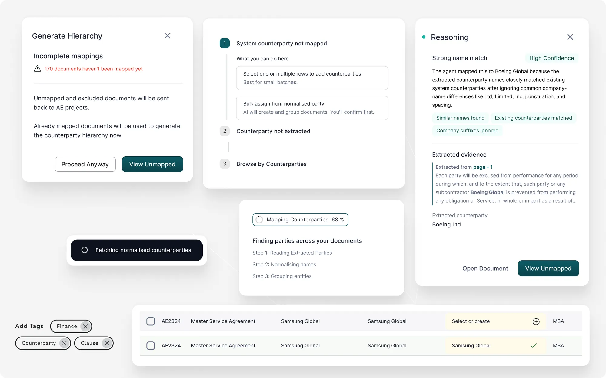
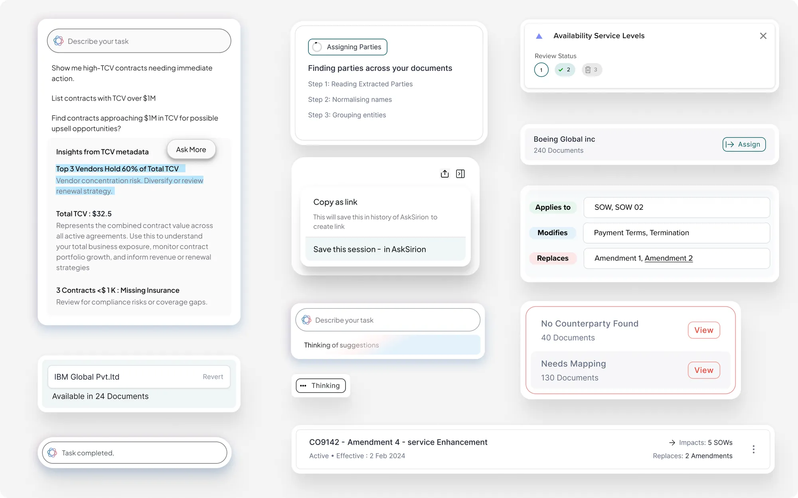
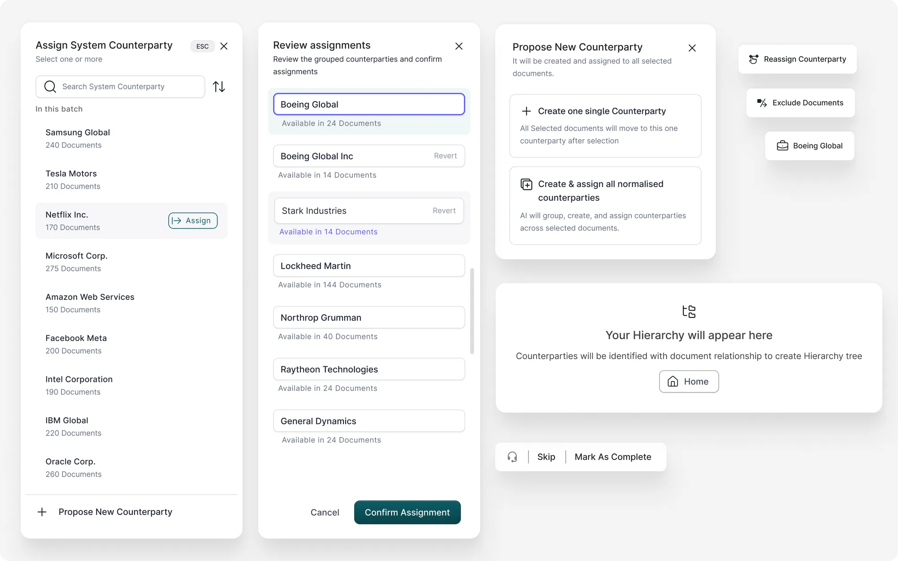
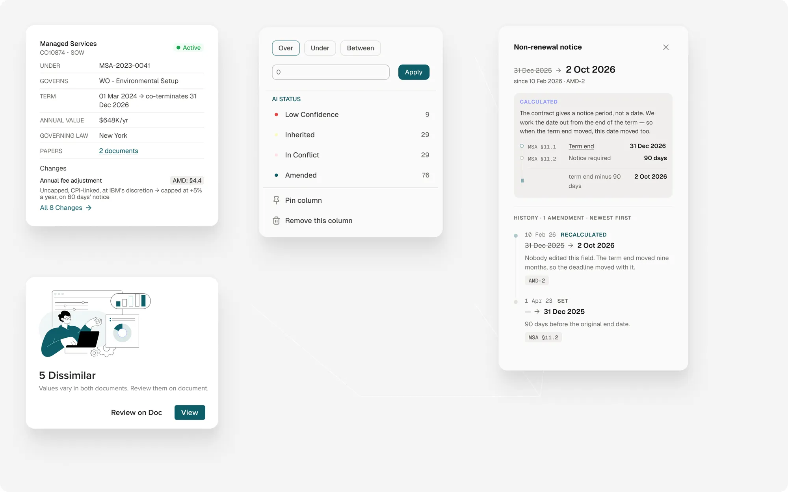
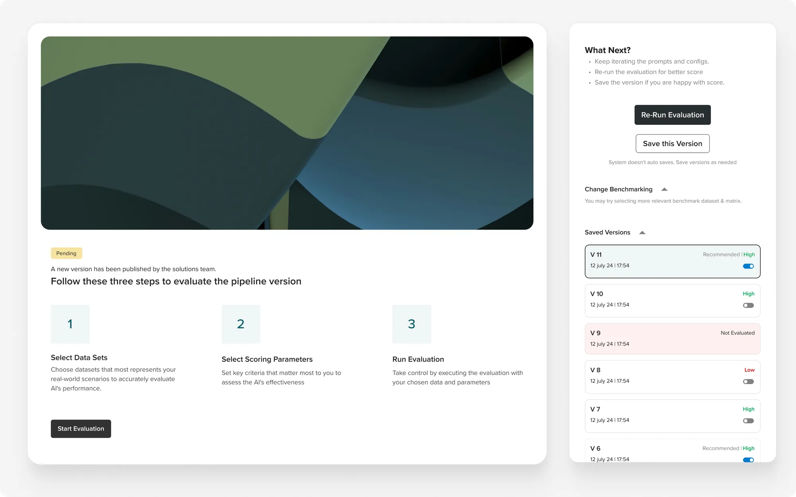
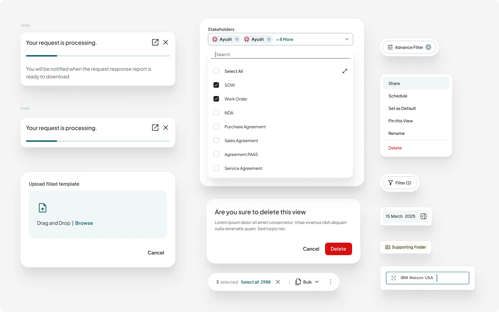
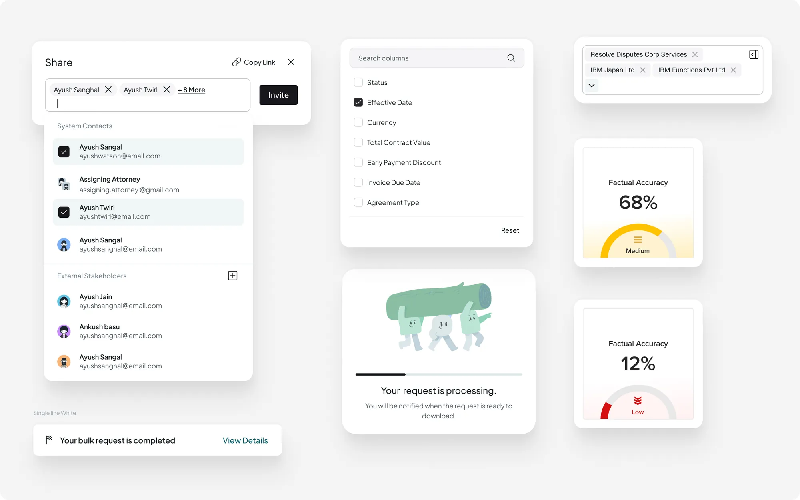
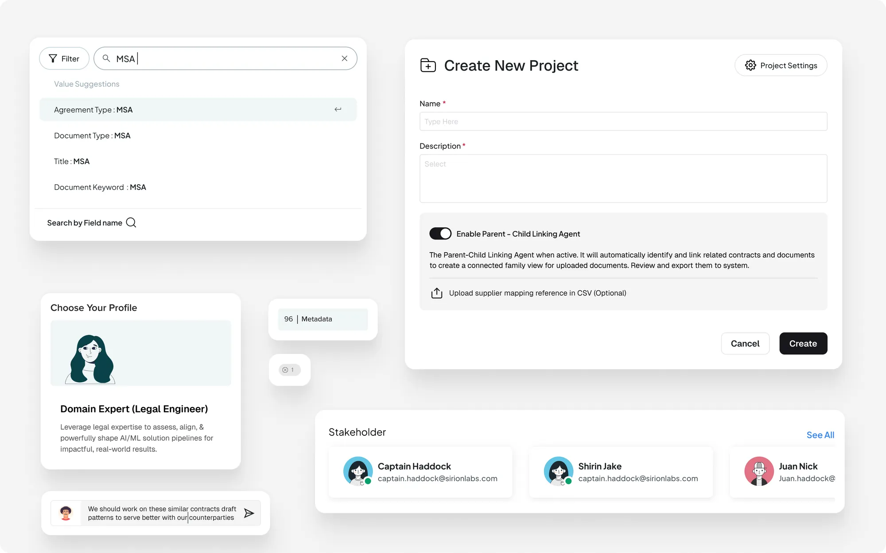

Extracted fields with their source
The agent shows its work before it asks for trust. A task typed in plain language comes back with the fields it found and the passage each one came from, page number included. Accept, discard or refine sit under the answer, and the input for the next instruction stays in view.

Confidence, clause history, signatories
Where a value came from, and how sure the machine is. Three answers to the same question. A value the model could not find, carrying its confidence and the clauses it searched. A value that changed, with every version and the document each one came from. And a relationship that says what it amends, what it touches, and who signed it.

Counterparty match reasoning
Reasoning, not a score. When the agent maps a counterparty, the panel says why: which names matched, which suffixes it ignored, and the extracted evidence it worked from. Progress is stepped and named. The unmapped state offers two ways forward rather than an error.

Applies to, modifies, replaces
Relationships on the face of a row. Applies to, modifies, replaces, read directly on the record instead of reconstructed from a folder. Alongside: insights with their reasoning, thinking states, and the two error states a counterparty mapping can end in.

Batch counterparty review
A person confirms what the machine grouped. The agent normalises counterparty names across a batch. The reviewer sees each group with its document count, can revert any grouping in place, and confirms the batch once. The empty hierarchy state tells you what will appear and why.

Non-renewal dates that recalculate
A date that explains itself. A non-renewal notice is calculated from the term end, so when the term moved, the deadline moved with it. The card shows the rule, the clauses it came from, and a history of every change, including the ones nobody made by hand. Next to it, a record card that states what it governs and sits under, and a filter that counts AI status.

Pipeline evaluation
Evaluating the pipeline instead of trusting it. A new pipeline version arrives as pending, not live. Three steps: pick the data that looks like real work, pick what to score, run it. Saved versions carry their result, and the system says out loud that it does not auto-save.

Notices, menus and bulk actions
The quiet parts. Processing notices in two sizes, a multi-select with search, a view menu with delete kept apart, a destructive confirm, a bulk bar that counts. None of it is the story; all of it is where products usually fall apart.

Sharing, columns and accuracy
States and gauges. Sharing with system contacts and external stakeholders in one list, a column picker, and an accuracy gauge that reads as a level (medium, low) rather than a bare percentage. A processing state that tells you what happens next.

Search, project setup, stakeholders
Search that suggests fields, projects that name their agent. Typing a value offers the fields it could belong to. Creating a project asks, in plain words, whether the linking agent should run and what it will do. Profiles are chosen by role, and stakeholders are people, not IDs.
